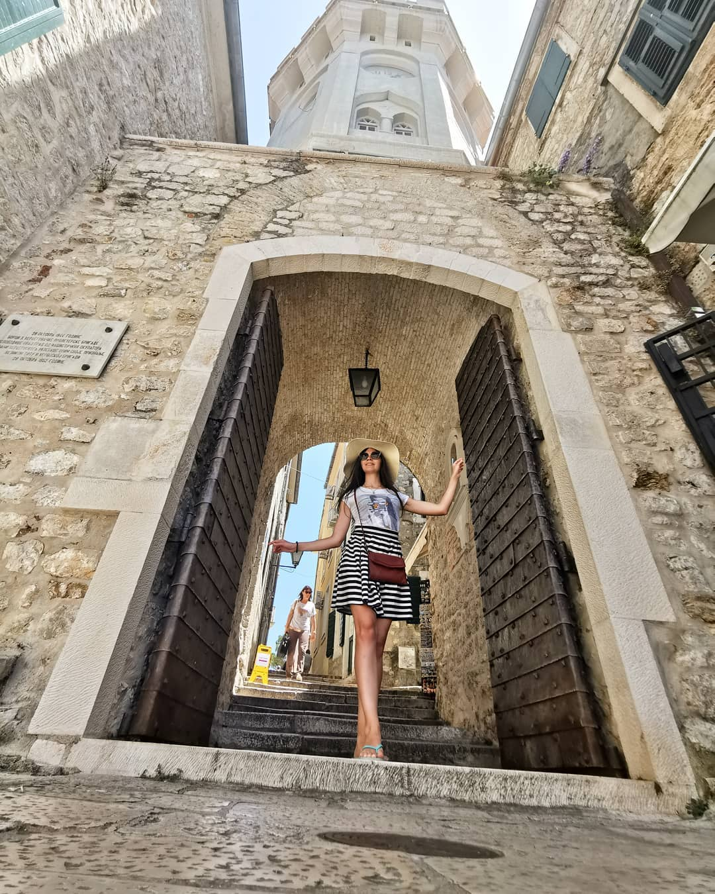

На крайнем юге славянской Адриатики черты балканских характеров кажутся особенно выпуклыми. Французко-российский антрополог и картограф Жозеф Деникер, совершив в конце XIX века пуиешествие по юго- восточному европейскому полуострову, перечислил признаки отдельного антропологического типа, динарского, который счел типичным для населения горных районов Далмации и Черногории. Высокий рост, стройное телосложение, продолговатое лицо, прямой нос, матовая кожа. Красивые, волевые, смелые, грубоватые люди, устроившие свою жизнь на непростой территори.
На этой каменистой земле, где складчатые горы тугой гармошкой согнаны к берегу моря, столкнулись сразу несколько цивилизаций. Славянские племена обитали в местных долинах и на взгорьях с VI или VII века. Приморскую полосу еще до нашей эры колонизировали римляне, их сменили Византия и Венеция, а в начале XIX века область Которского залива перешла под власть Габсбургов. Континентальные края в конце XV столетия подчинялись османам, но сопротивление завоевателям здесь никогда не прекращалось, отсюда в романтические времена и возникло определение Черногории как "Провославной Спарты".
Термин "Черногория" впервые в узком географическом смысле упортебил в 1376 году летописец из Рагузы (Дубровника). Визуальным символом "земель над морем" считают мрачные вершины горного массива Ловчен. Безжизненные шапки гор здесь действительно темно-серого оттенка, это прекрасно видно и с берега, и с палубы яхты, и с самолета.
Черногорцы считают себя народом воинов и поэтов. С песней смерти на устах и оружием в руках они, обороняясь от османов, продержались пятьсот лет на сраже своих суровых Фермопил. Историки считают, что причиной тому не только неуступчивость горцев, но и особенности местной географии: мало какому басурману хотелось лезть на двухкилометровую верхоту с риском получить пулю в лоб из-за скалы угольного цвета.
Географические параметры черногорского участка адриатическоой зоны действительно крайне своеобразны. Южные области Динарской горной цепи - пронзительно красивый, но на редкость негостеприимный и самый дождливый район Европы: в местечке Црквице выпадает восемь тысяч миллиметров осадков в год. Устремленные к пустому небу скалы кое-где перемежаются бездонными провалами. Глубина самого известного каньона реки Тары превышает 1300 метров, и этой пропасти нет равных в Европе. Конница здесь бесполезна, с пушками сюда не подняться. Условия для прибыльного хозяйствования в черных горах долго не складывались, и многие, но малочисленные славянсие племена, кормившиеся скотовводством, вели полуголодное полукочевое существование - зато становились крепче, закаляя в лишениях волю.
Эти люди были готовы к вечной обороне от любых захватчиков и любых природных катаклизмов. Они жили общинами, по законам кровного братства и кровной мести, убежденные в том, что только так и возмоно зацепиться за жизнь в угрюмых горах. Мораль диктовалась обычаями предков, священник был не только пастырем, но и товарием по оружию, ценность женщины определяась ее способностью поскорее нарожать сыновей.
На западе Европы уже совершилась промышленная революция, а в Черногории все еще сохраняялаось натуральное хозяйство. Горные села существовали в изоляции друг от друга, первую гужевую дорогу здесь проложили в 1840 году, через семь лет после открытия первой начальной школы. До 1878 года в области с населением в сто или сто пятьдесят тысяч человек не было городов.
Политической самостоятельности от османов Черногория добилась в 1796 году, после битв у Мартиничей и при Крусах. Выплата дани султану тут же прекратилась. Стара Цпна Гора - гористый овал размером примерно семьдесят на трицать километров вокруг монастыря Цетине - превратилась в ядро будущих страны и нации. Род Петровичей-Негошей, управляющий Цетинской митрополией, а потом и княжеством, соединял в своих рукаах бразды светской и духовной власти. Поскольку монахам полагалось быть бездетными, властные полномочия передавались от дяди к пемяннику.
Петровичи-Негоши добивались расширения своих земель. Постепенно к старой Черногории присоединили прилегающие к Цетине с севера земли, Брда ("горы") и районы Черногорской Герцеговины с центром в Никшиче. Еще столетие назад демографы точно подсчитывали домохозяйства, управлявшиеся черногорскими племенами. Каждое собиралось из братсв-кланов, связанных родсттвенными узами по мужской линии.
На этой
земле
столкнулись
несколько
цивилизаций
